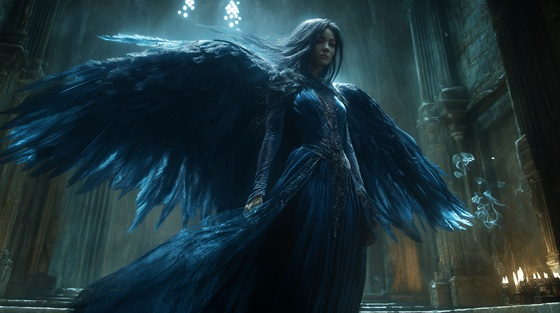

Whisper her name into twilight and feel the gentle mourning of Nephthys, the shadow-sister of Isis. “Dusk’s Embrace” is an atmospheric doom ballad that honors her role as protector of souls, companion of the grieving, and guide through the stillness of death.
Who is Nephthys?
Nephthys is the goddess of mourning, lamentation, the dead, and protective magic. As the sister of Isis, Osiris, and Seth, she walks in the margins of myth — often unseen but always essential. She stood beside Isis during the resurrection of Osiris and is invoked in funeral rites and spells of protection for the deceased.
She is often shown with outstretched wings, cloaked in black or indigo, bearing the hieroglyph of her name — the temple on the basket — atop her head.
Nephthys: Dusk’s Embrace
When sun has bled beyond the hill
And silence calls the world to still
I walk between the breath and grave
A shadow robed, a soul to save
No crown I wear, no fire I wield
But hearts are wrapped in what I shield
In every tomb, my whisper stays
A prayer in dusk, a watcher’s gaze
I weep for gods, I walk with kings
In every loss, a song I sing
I am Nephthys — dusk’s embrace
The final light, the quiet grace
No monument may speak my name
Yet all who pass recall my flame
I keep the dead, I soothe the sky
Where mourners kneel, I do not die
They know me not in songs of light
But I am there when day takes flight
I stood by Isis in her pain
I held the corpse, I called the rain
With sacred oil, I dressed the wound
With tears, I made his spirit tuned
I guide the soul through starlit air
And guard the gates with mother’s care
I weep for gods, I walk with kings
In every loss, a song I sing
I am Nephthys — dusk’s embrace
The final light, the quiet grace
No monument may speak my name
Yet all who pass recall my flame
I keep the dead, I soothe the sky
Where mourners kneel, I do not die
My wings unfold where light has fled
I guard the chambers of the dead
No war I wage, no wrath I cry
I only ask you do not lie
For in your grief, I softly tread
And lift the veil from what you dread
I am the truth no sun can show
The night that heals what stars don’t know
I weep for gods, I walk with kings
In every loss, a song I sing
I am Nephthys — dusk’s embrace
The final light, the quiet grace
No monument may speak my name
Yet all who pass recall my flame
I keep the dead, I soothe the sky
Where mourners kneel, I do not die
Let torches fade and silence bloom
I am the love beyond the tomb
In every shadow’s breathless trace
You’ll find me there — dusk’s warm embrace
So speak my name when night is long
I’ll guide you home where you belong
I am Nephthys, veil and flame
The silent keeper with no fame